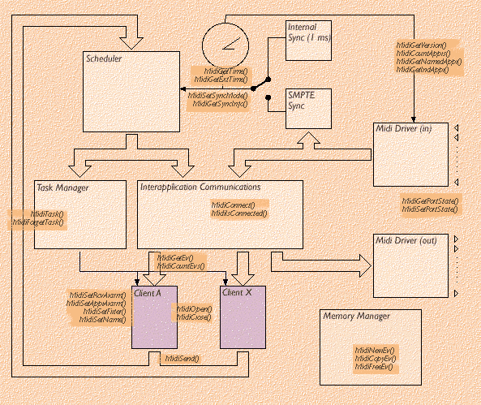

OnLine Documentation (V1.1), ©GRAME
MidiShare is a realtime multitasks Music operating system specially devised for the developing of musical applications. Its innovative features and careful design, result of 6 years of research and development, provide developers with a powerful and efficient toolbox for developing Midi applications.
MidiShare is based on a client/server model. It is composed of six main components : an event memory manager, a time manager and synchronizer, a task manager, a communication manager, an event and task scheduler and Midi drivers.

Figure 1 : The conceptual Model of MidiShare
The figure 1 shows the conceptual model of MidiShare :
MidiShare offers several advantages to developers in terms of code efficiency, portability and easiness of developing sophisticated real time Midi applications. It avoids many complexities and limitations of other Midi Operating Systems.
Communications are based on high level events instead of packets of Midi bytes. These events are easier and faster to process than packets of Midi bytes. For example large system exclusive messages never need to be splitted into multiple packets. They are sent, received and processed as a whole, like any other Midi events. Events are not limited to strict Midi messages. MidiShare offers full support for Midi File 1.0 events. Lyrics, tempo changes and cue points for example can be sent and received by client applications like Midi events. Future versions of MidiShare will provide additional events for multimedia.
MidiShare allows multi-ports configurations (up to 256 physical ports) to be easily handled. All MidiShare events are stamped with a full Midi device address defined by a physical port number and a Midi channel. Client applications just need one input point and one output point to communicate with all the Midi devices (up to 4096 devices). Connections between applications are easier for users. Application code is simpler and the full device address of an event is never lost during inter-application communications.
MidiShare includes its own dynamic memory manager, specially designed for real-time operations at interrupt level. All MidiShare internal buffers and queues are dynamically sized avoiding overflow problems encountered in other systems.
Several mechanisms are proposed to control the real time behavior of Midi applications. Receive Alarms can be installed by client applications to deal with incoming events in real time at interrupt level. Context alarm can be installed to be informed of changes in the MidiShare configuration. Events can be sent in the future. Function calls can be scheduled with two flavors : MidiTask are "real"real-time while MidiDTask benefit from the scheduler but are pseudo real-time for functions that can't be called at interrupt level.